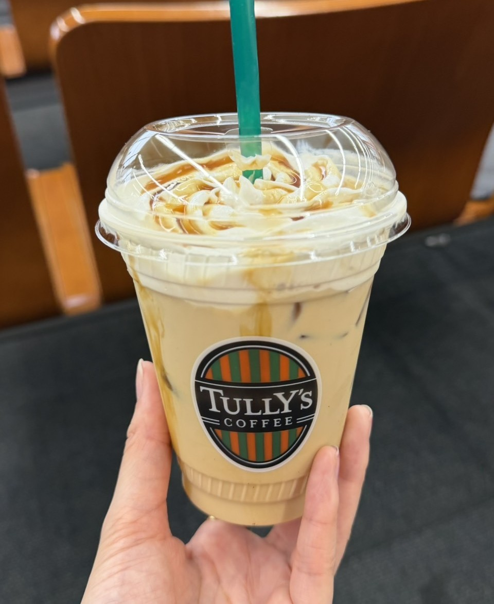

TULLY'S COFFEE — Caramel Latte
みなさん、こんにちは！😊
今日は少し早起きをして、TULLY'S（タリーズ）のキャラメルラテをお供に1日をスタートさせました。🙌
カップから漂うキャラメルの甘い香りと、エスプレッソのほろ苦いコク。この一口が体に染み渡る瞬間が、たまらなく幸せなんですよね。
しかも、今日は朝から雲ひとつない快晴！☀
窓から差し込むお日様の光を浴びているだけで、なんだか理由もなくウキウキした気分になってきます。
最近つくづく思うのですが、「朝活」をするとその日1日のモチベーションがガラリと変わりますよね。
いつもよりほんの少し早く起きて、自分のためだけの時間を過ごす。これだけで、心に余裕が生まれて「今日も1日頑張るぞ！」ってポジティブなスイッチが入る気がします。
毎日の生活にちょっとお疲れ気味の方や、なんとなく1日が終わっちゃうな〜と感じている方。
ぜひ明日の朝は、少しだけ早起きして、お気に入りのコーヒーを片手に「朝活」を取り入れてみませんか？☕
きっと、驚くほど爽やかで特別な1日が過ごせるはずです！
みなさんにとって、今日が素敵な日になりますように。☘✨